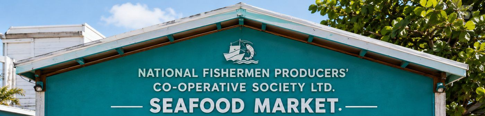

A fisher-owned society, registered in 1966
National Fishermen was built so that Belizean fishers could combine their effort and reach markets that no single fisher could reach alone.

Registered on 29 April 1966
The Society and its by-laws were registered on 29 April 1966. From that point National Fishermen has operated as a fisher-owned cooperative in Belize, with its members at the centre of the organization.
The cooperative's stated objects include helping members produce, process, market, distribute and sell their products more efficiently. That purpose still describes what the Society does.
- Registered 29 April 1966
- Ownership Fisher-owned cooperative
- Governance Managing committee elected by members
- Legal name National Fishermen Producers' Co-operative Society Ltd.
- Base Belize City, Belize
Sources: FisheryProgress institutional strengthening report and FishWise.
Members own it, and members govern it
National Fishermen is owned by the fishers who make it up. Members elect a managing committee, and that committee serves as the board overseeing the Society.
- 01 Fishers Members harvest in Belizean waters
- 02 Cooperative Members combine effort and reach
- 03 Processing Handling, grading and preparation
- 04 Market Buyers at home and abroad

The people the Society was built around
Behind every product is a fishing community. National Fishermen was built around the cooperative model, creating a collective structure through which Belizean fishers can connect their work at sea with processing and market opportunities.
A cooperative gives a fisher more than a buyer for the day's catch. It gives a share in the organization, a vote in how it is run, and a route to markets that would otherwise be out of reach.

Talk to the cooperative
For membership questions, cooperative matters or commercial enquiries, the team can be reached directly.
- Address Angel Lane, Belize City, Belize
- Telephone +501 227-3165
- Email natfish@btl.net